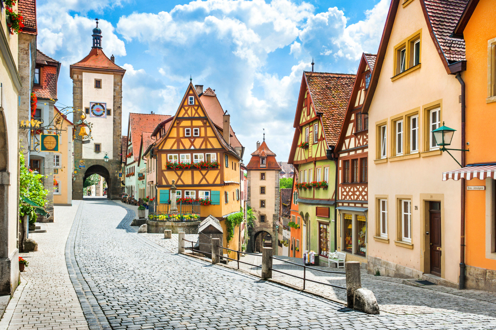

Images
- 
-

-

-

-

Little, mountainous, efficient Switzerland is one of Europe's most appealing destinations. Wedged neatly between Germany, Austria, France, and Italy, Switzerland melds the best of all worlds — and adds a healthy dose of chocolate, cowbells, and cable cars. Fiercely independent and decidedly high-tech, the Swiss stubbornly hold on to their quaint traditions, too. Join cheesemakers in a high valley, try to call the shepherds on an alphorn, and hike through some of the world's most stunning mountain scenery.
Germany is blessed with some of Europe's most high-powered sights. It has spectacular scenery — the jagged Alps, flower-filled meadows, rolling hills of forests and farms, and mighty rivers — dotted all over with castles and churches of every variety. In Deutschland's idyllic half-timbered villages, you can enjoy strudel at the bakery or sip a stein of beer while bikes rattle by over the cobblestones. And don't overlook the "real" Germany of today — a world of high-tech transportation, gleaming cities, social efficiency, and world-class museums celebrating many of history's greatest cultural achievements.
Rattling your bike over cobbles, past a line of gabled houses reflected in a mirror-smooth canal…the Netherlands is just like you imagined it. In its 17th-century Golden Age, Dutch traders established a global economy — and funded a culturally rich society back home. Tiny Holland may just have the world's densest concentration of great artists, and shows off their works in several world-class museums. Be sure to venture beyond Amsterdam — take advantage of the efficient train network, which puts nearly every Dutch destination within an easy day trip. Rent a bike and cruise the flat countryside. Wherever you roam, look behind its placid exterior, where you'll find a complex mix of modern technology, honored traditions, farmed countryside, outrageous architecture, and no-nonsense, globally minded people.